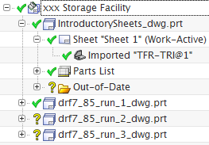
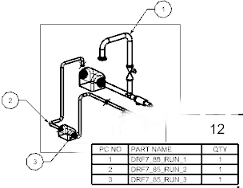

Review the booklet structure
-
Open the Part Navigator
 , and then pin it in place.
, and then pin it in place.

Under the IntroductorySheets_dwg.prt node, there are individual nodes for the drawing sheet, the imported view, and the parts list. These elements were part of the introductory template. There are also nodes in the booklet for each of the primary content objects you selected.
-
In the Part Navigator, right-click the Parts List node, and then choose Edit Levels.
-
On the Edit Levels dialog bar, turn on both and
 , and then click
, and then click  .
.
